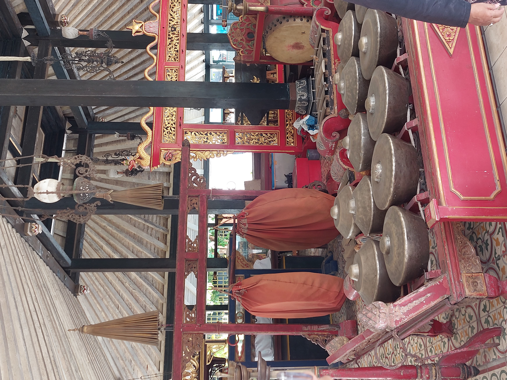
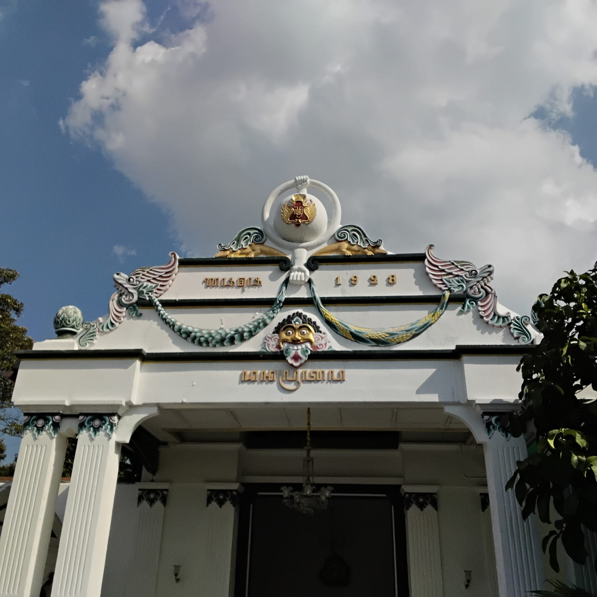
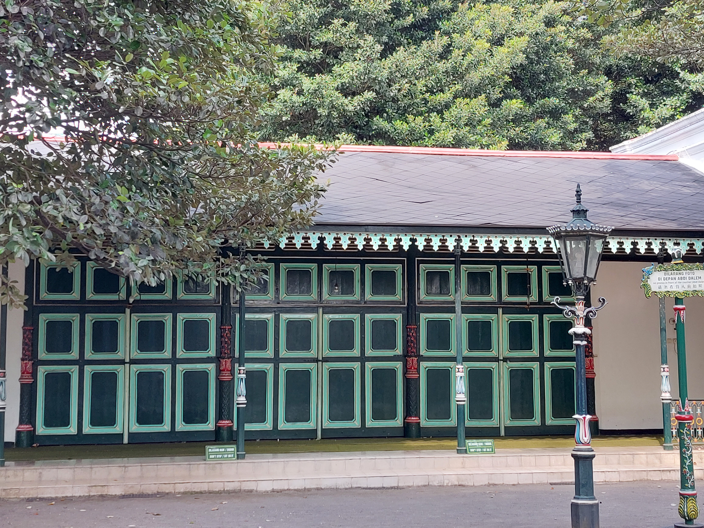
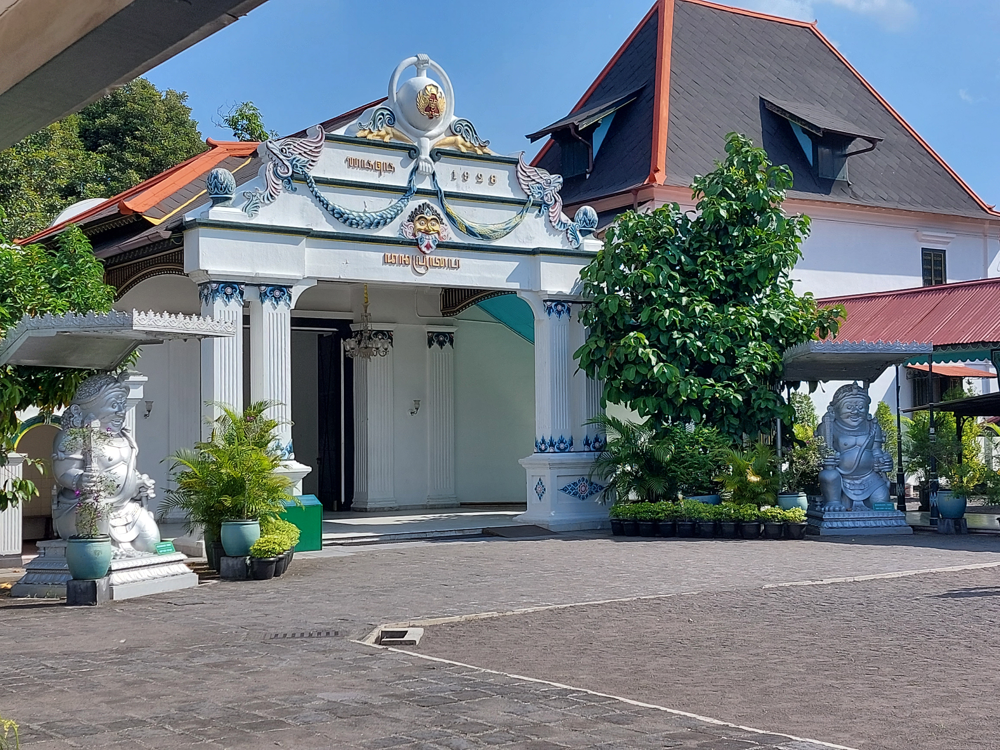
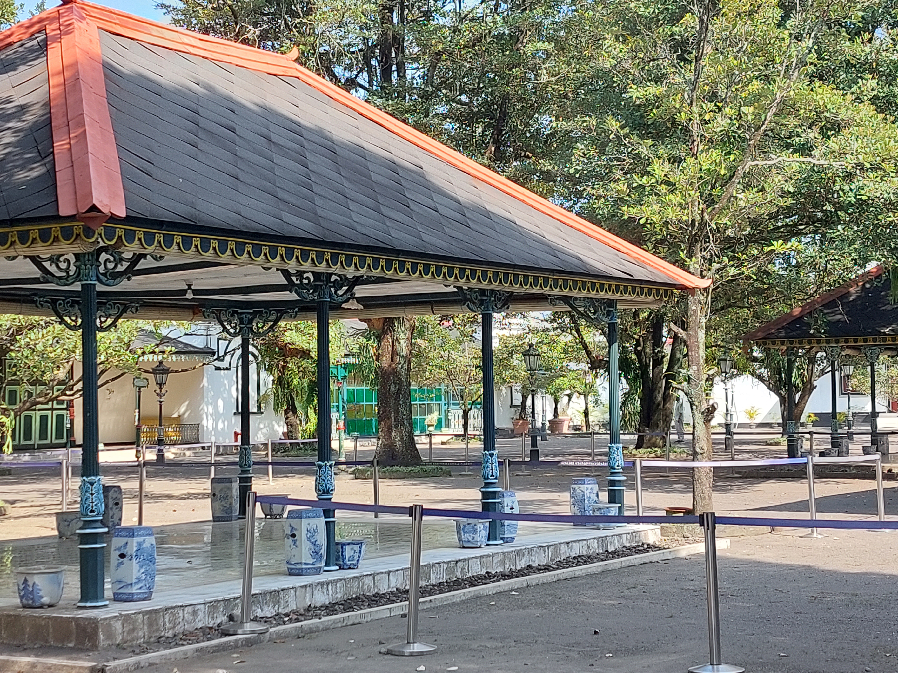
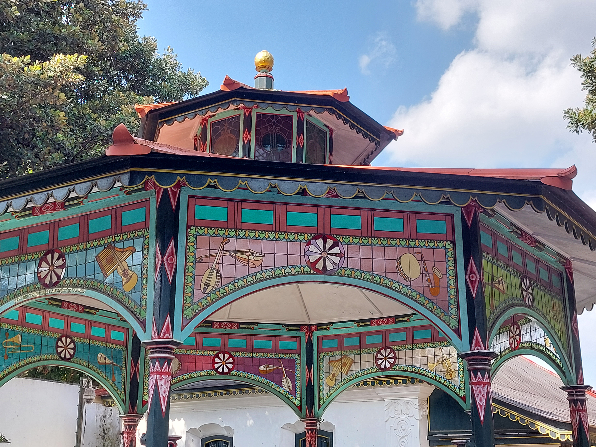

Mengenal Keindahan Seni, Sejarah, dan Arsitektur Klasik Nusantara

Perangkat musik tradisional Jawa (Gamelan) yang dibalut kain pelindung jingga-merah di dalam kompleks keraton.

Ukiran wajah pelindung, lambang kerajaan, lambang burung garuda, serta pahatan angka tahun pemugaran 1928.

Pintu-pintu kayu hijau tua bergaya simetris, berjejer rapi di area larangan memotret wajah penghuninya secara langsung.

Pintu gerbang kokoh putih megah perpaduan arsitektur Jawa dan Eropa, dijaga sepasang patung Dwarapala besar.

Halaman dalam dengan paviliun berlantai marmer, ditopang pilar besi hijau toska gelap dan dihiasi pot porselen antik biru-putih.

Bangunan unik panggung pertunjukan beratap segi delapan yang dihiasi kaca patri berwarna bermotif instrumen musik barat.